Chapter 1 The ggplot2 package
1.1 Introduction
In this chapter, we’ll explore the package ggplot2. Package ggplot2 is one of the most popular packages of R, and a de facto standard for creating publishable visualizations.
Whole books have been written about ggplot2 (e.g. [INSERT REF]); these will not be repeated here. Instead, I have selected the minimal amount of information and examples to get you going in your own research visualization endeavors in biomedical research. For that reason, this chapter only deals with the base ggplot() function and its most important usage scenarios.
In my opinion, you are best prepared when first learning the ggplot “language” structure, not the complete listing of possibilities. You can check these out later on your own. If you are interested in what the package has to offer, type help(package="ggplot2") on the console.
Keep the goal in mind
You should always remember the purpose with which you create a plot:
- Communicate results in a visual way. The audience consists of other professionals: fellow scientists, students, project managers, CEO’s. The scope is in reports, publications, presentations etc. Your plots should be immaculately annotated - have a title and/or caption, axis labels with physical quantities (e.g. Temperature) and measurement units (e.g. Celsius), and a legend (if relevant).
- Create a representation of data for visual inspection. The audience is yourself. This is especially important in Exploratory Data Analysis (EDA). You visualize your data in order to discover patterns, trends, outliers and to generate new questions and hypotheses. The biggest challenge is to select the correct, most appropriate visualization that keeps you moving on your research track.
Besides this, you should of course choose a relevant visualization for your data. For instance, generating a boxplot representing only a few data points is a poor choice, as will a scatterplot for millions of data points almost always be.
To help your imagination and see what is possible you should really browse through The R Graph Gallery. It has code for all the charts in the gallery.
1.2 Getting started
Install the packages ggplot2 and tidyr first, if not already installed. The package ggplot2 is the topic of this chapter of course. Package tidyr is the topic of a later chapter, but we’ll see a use case of it here already.
install.packages("ggplot2")
install.packages("tidyr")After installing, you’ll need to load the packages.
library(ggplot2)
library(tidyr)A first plot
Let’s dive right in and create a first plot, and walk through the different parts of this code.
ggplot(data = airquality, mapping = aes(x = Temp, y = Ozone)) +
geom_point()## Warning: Removed 37 rows containing missing values (geom_point).Figure 1.1: A scatter plot visualizing Ozone as a function of Temperature
There are two chained function calls: ggplot() and geom_point(). They are chained using the + operator. The first function, ggplot(), creates the base layer of the plot It receives the data and defines how it maps to the two axes. By itself, ggplot(), will not display anything of your data. It creates an empty plot where the axes are defined and have the correct scale:
ggplot(data = airquality, mapping = aes(x = Temp, y = Ozone))Figure 1.2: An empty plot pane
The next function, geom_point(), builds on the base layer it receives via the + operator and adds a new layer to the plot, a data representation using points.
The geom_point() function encounters rows with missing data and issues a warning (Warning: Removed 37 rows...) but proceeds anyway. There are two ways to prevent this annoying warning message. The first is to put a warning=FALSE statement in the RMarkdown chunk header. This is usually not a good idea because you should be explicit about problem handling when implementing a data analysis workflow because it hinders the reproducibility of your work. Therefore, removing the missing values explicitly is a better solution:
airquality <- na.omit(airquality)
ggplot(data = airquality, mapping = aes(x = Temp, y = Ozone)) +
geom_point()Note that this overwrites the build-in dataset airquality for the duration of this R session.
To obtain a similar plot as created above with “base” R, you would have done something like this:
with(airquality, plot(x = Temp, y = Ozone))Figure 1.3: The same visualization with base R
You can immediately see why ggplot2 has become so popular. When creating more complex plots it becomes more obvious still, as shown below.
Adding a dimension using color
This plot shows the power of ggplot2: building complex visualizations with minimal code.
airquality$Month <- as.factor(airquality$Month)
airquality$TempFac <- cut(airquality$Temp, breaks = c(50, 75, 100), labels = c("low", "high"), ordered_result = T)
ggplot(data = airquality, mapping = aes(x = Temp, y = Ozone, color=Month)) +
geom_point() Figure 1.4: Ozone as function of Temp with plot symbols colored by Month
Inspecting and tuning the figure
What can you tell about the data and its measurements when looking at this plot?
Looking at the above plot, you should notice that
- the temperature measurement is probably in degrees Fahrenheit. This should be apparent from the plot. The measurement unit for Ozone is missing. You should look both up; the
datasetspackage doc says it is in Parts Per Billion (ppb).
- temperature is lowest in the fifth month -probably May but once again you should make certain- and highest in months 8 and 9.
- ozone levels seem positively correlated with temperature (or Month), but not in an obvious linear way
- a detail: temperature is measured in whole degrees only. This will give plotting artifacts: discrete vertical lines of data points.
The plot below fixes and addresses the above issues to create a publication-ready figure. We’ll get to the details of this code as we proceed in this chapter. For now the message is be meticulous in constructing your plot.
airquality$Month <- factor(airquality$Month, levels=1:12, labels=month.abb)
ggplot(data = airquality, mapping=aes(x=Temp, y=Ozone)) +
geom_point(mapping=aes(color=Month)) +
geom_smooth(method="loess") +
xlab(expression("Temperature " (degree~F))) +
ylab("Ozone (ppb)") +
labs(color="Month")Figure 1.5: Ozone level dependency on Temperature. Grey area: Loess smoother with 95% confidence interval. Source: R dataset “Daily air quality measurements in New York, May to September 1973.”
1.3 ggplot2 and the theory of graphics
Philosophy of ggplot2
The author of ggplot2, Hadley Wickham, had a very clear goal in mind when he embarked on the development of this package:
“The emphasis in ggplot2 is reducing the amount of thinking time by making it easier to go from the plot in your brain to the plot on the page.” (Wickham, 2012)
The way this is achieved is through “The grammar of graphics”
The grammar of graphics
The grammar of graphics tells us that a statistical graphic is a mapping from data to geometric objects (points, lines, bars) with aesthetic attributes (color, shape, size).
The plot may also contain statistical transformations of the data and is drawn on a specific coordinate system. Faceting -grid layout- can be used to generate the same plot for different subsets of the dataset. (Wickham, 2010)
1.4 Building plots with ggplot2
The layered plot architecture
A graph in ggplot2 is built using a few “layers”, or building blocks.
| ggplot2 | description |
|---|---|
| data= | the data that you want to plot |
| aes() | mappings of data to position (axes), colors, sizes |
| geom_…..() | shapes (geometries) that will represent the data |
First, there is the data layer - the input data that you want to visualize:

The data layer
Next, using the aes() function, the data is mapped to a coordinate system. This encompasses not only the xy-coordinates but also possible extra plot dimensions such as color and shape.

The data and aesthetic layers
As a third step, the data is visually represented in some way, using a geometry (dealt with by one of the many geom_....() functions). Examples of geometries are point for scatterplots, boxplot, line etc.

The data, aesthetic and geometry layers
At a minimum, these three layers are used in every plot you create.
Besides these fundamental aspects there are other elements you may wish to add or modify: axis labels, legend, titles, etc. These constitute additional, optional layers:

All layers
Except for Statistics and Coordinates, each of these layers will be discussed in detail in subsequent paragraphs.
“Tidy” the data
This is a very important aspect of plotting using ggplot2: getting the data in a way that ggplot2 can deal with it. Sometimes it may be a bit challenging to get the data in such a format: some form of data mangling is often required. This is the topic of a next chapter, but here you’ll already see a little preview.
The ggplot2 function expects its data to come in a tidy format. A dataset is considered tidy when it is formed according to these rules:
- Each variable has its own column.
- Each observation has its own row.
- Each value has its own cell.
Want to know more about tidy data? Read the paper by Hadley Wickham: (Wickham 2014).
Here is an example dataset that requires some mangling, or tidying, to adhere to these rules.
| patient | sex | dose10mg | dose100mg |
|---|---|---|---|
| 001 | f | 12 | 88 |
| 002 | f | 11 | 54 |
| 003 | m | 54 | 14 |
| 004 | m | 71 | 21 |
| 005 | f | 19 | 89 |
This dataset is not tidy because there is an independent variable -the dose- that should have its own column; its value is now buried inside two column headers (dose10mg and dose10mg). Also, there is actually a single variable -the response- that is now split into two columns. Thus, a row now contains two observations.
Suppose you want to plot the response as a function of the dose. That is not quite possible right now in ggplot2. This is because you want to do something like
ggplot(data=dose_response,
mapping = aes(x = "<I want to get the dose levels here>",
y = "<I want to get the response here>")) +
geom_boxplot()The problem is you cannot specify the mapping in a straightforward manner. Note that in base R you would probably do this:
boxplot(dose_response$dose10mg, dose_response$dose100mg)Figure 1.6: Selecting untidy data
So, we need to tidy this dataframe since the dose_10_response and dose_100_response columns actually describe the same variable (measurement) but with different conditions. As an exercise, I tried it using base R. Here is my solution.
tidy_my_df <- function(df) {
create_tidy_columns <- function(x) {
data.frame(patient = rep(x[1], 2),
sex = rep(x[2], 2),
dose = c(10, 100),
response = c(x[3], x[4]))
}
tmp <- Reduce(function(x, y) merge(x, y, all=TRUE),
apply(X = df, MARGIN = 1, FUN = create_tidy_columns))
tmp[order(tmp$dose), ]
}
knitr::kable(head(tidy_my_df(dose_response), n=10))| patient | sex | dose | response | |
|---|---|---|---|---|
| 1 | 001 | f | 10 | 12 |
| 3 | 002 | f | 10 | 11 |
| 5 | 003 | m | 10 | 54 |
| 7 | 004 | m | 10 | 71 |
| 9 | 005 | f | 10 | 19 |
| 11 | 006 | f | 10 | 22 |
| 13 | 007 | f | 10 | 23 |
| 15 | 008 | m | 10 | 68 |
| 17 | 009 | f | 10 | 30 |
| 19 | 010 | m | 10 | 83 |
Luckily, there is a very nice package that makes this quite easy: tidyr.
Tidying data using tidyr::gather()
## tidy
dose_response_tidy <- gather(data=dose_response,
key=dose,
value=response,
"dose10mg", "dose100mg")
## transform dose column to nice factor
dose_response_tidy$dose <- factor(ifelse(
dose_response_tidy$dose == "dose10mg", 10, 100),
ordered = T)
knitr::kable(head(dose_response_tidy, n=10))| patient | sex | dose | response |
|---|---|---|---|
| 001 | f | 10 | 12 |
| 002 | f | 10 | 11 |
| 003 | m | 10 | 54 |
| 004 | m | 10 | 71 |
| 005 | f | 10 | 19 |
| 006 | f | 10 | 22 |
| 007 | f | 10 | 23 |
| 008 | m | 10 | 68 |
| 009 | f | 10 | 30 |
| 010 | m | 10 | 83 |
The data is tidy now, and ready for use within ggplot2.
We’ll explore the gather() function in detail in a next chapter.
Now, creating the plot in ggplot2 is a breeze
dr_plot <- ggplot(dose_response_tidy, aes(x = dose, y = response))
dr_plot +
geom_boxplot()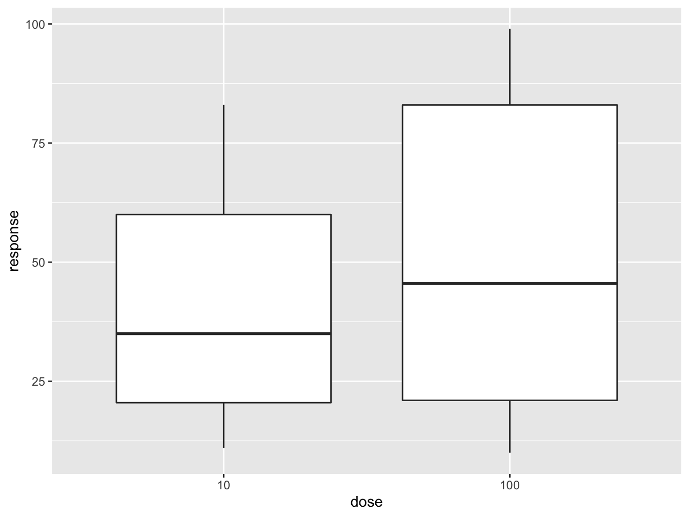
Would you proceed with this hypothetical drug?
1.5 Aesthetics
After you obtain a tidy dataset and pass it to ggplot you must decide what the aesthetics are. This defines the way the data are represented in your plot. Very roughly speaking, you could correlate the aesthetics to the dimensions of the data you want to visualize. For instance, given this chapters’ first example of the airquality dataset, the aesthetics were defined in three “dimensions”:
- dimension “X” for temperature,
- dimension “Y” for Ozone
- dimension “color” for the month.
Although color is used most often to represent an extra dimension in the data, other aesthetics you may consider are shape, size, line width and line type.
Colors
Colors can be defined in a variety of ways:
- color name
- existing color palette
- custom color palette
Below is a panel displaying all named colors you can use in R
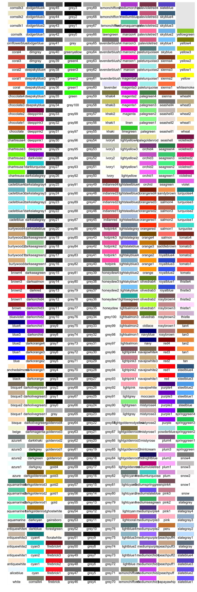
When you provide a literal (character) for the color aesthetic it will simply be that color. If you want to map a property (e.g. “Month”) to a range of colors, you should use a color palette. Since ggplot has build-in color palettes, you can simply use color=<my-third-dimension-variable>. This variable mapping to color can be either a factor (discrete scale) or numeric (continuous scale).
The ggplot function will map the variable the default color palette.
Here are some ways to work with color palettes
The default palette
sp <- ggplot(iris, aes(Sepal.Length, Sepal.Width)) + geom_point(aes(color = Species))
sp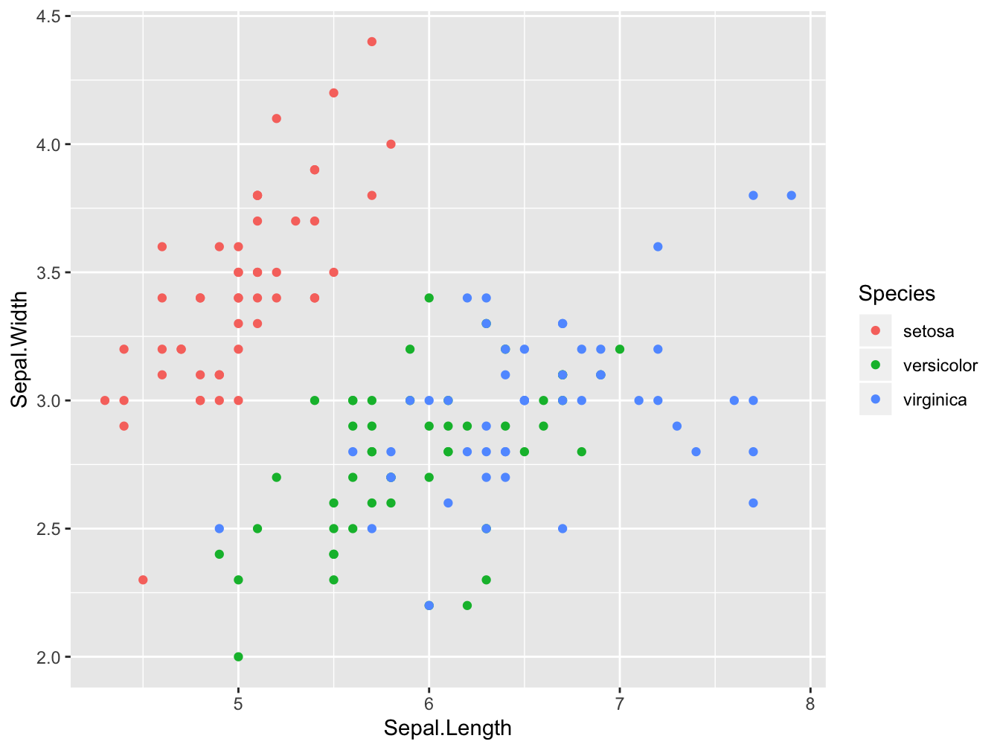
Manual palettes
You can specify your own colors using scale_color_manual() for scatter plots or scale_fill_manual() for boxplots and bar plots.
sp + scale_color_manual(values = c("#00AFBB", "#E7B800", "#FC4E07"))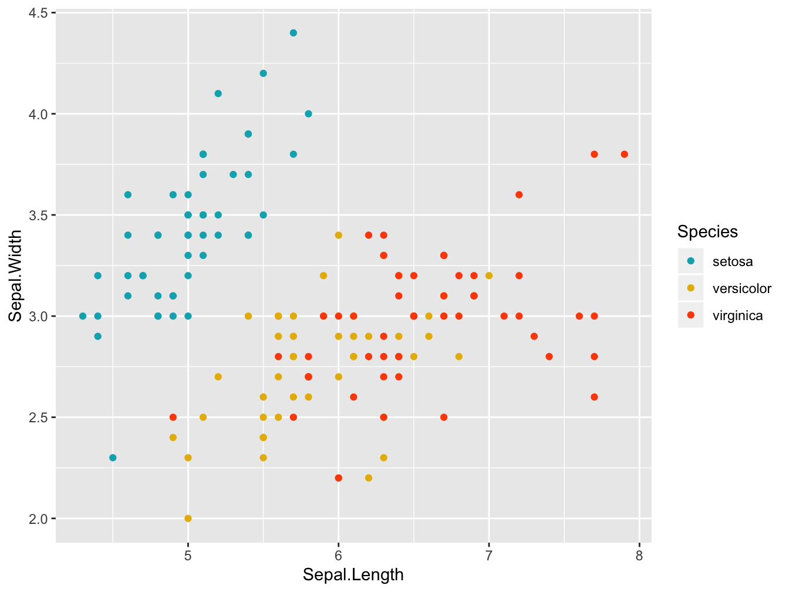
Here is a nice set of colors:
custom_col <- c("#FFDB6D", "#C4961A", "#F4EDCA",
"#D16103", "#C3D7A4", "#52854C", "#4E84C4", "#293352")
show_palette(custom_col, cols=length(custom_col))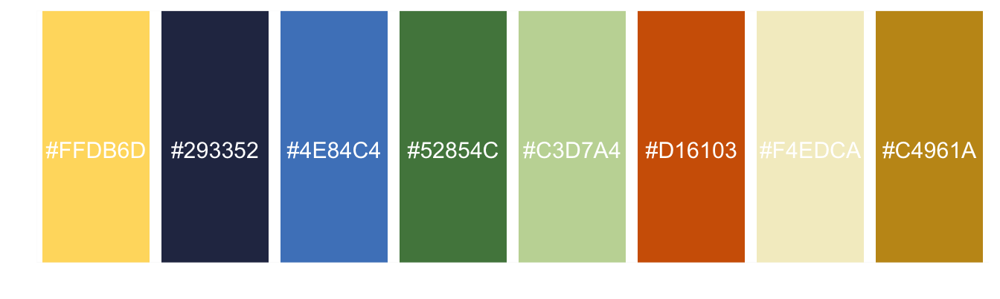
Here is a colorblind-friendly palette:
# The palette with grey:
cbp1 <- c("#999999", "#E69F00", "#56B4E9", "#009E73",
"#F0E442", "#0072B2", "#D55E00", "#CC79A7")
show_palette(cbp1, cols=length(cbp1))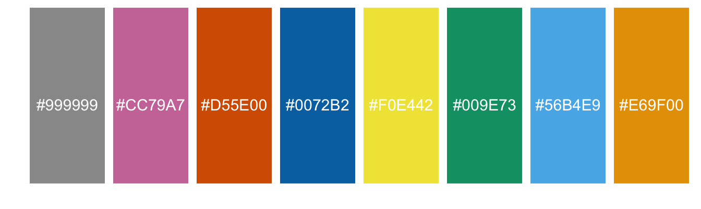
When you pass a palette that is longer than the number of levels in your factor, R will only use as many as required:
sp + scale_color_manual(values = cbp1)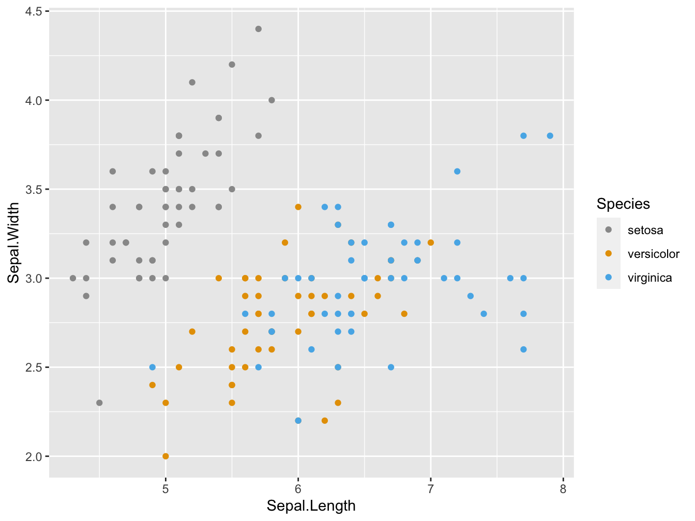
RColorBrewer palettes
R provides the “RColorBrewer” package. The brewer.pal function has several palettes for various applications at your disposal. Have a look at brewer.pal.info, which lists all:
library(RColorBrewer)
knitr::kable(brewer.pal.info)| maxcolors | category | colorblind | |
|---|---|---|---|
| BrBG | 11 | div | TRUE |
| PiYG | 11 | div | TRUE |
| PRGn | 11 | div | TRUE |
| PuOr | 11 | div | TRUE |
| RdBu | 11 | div | TRUE |
| RdGy | 11 | div | FALSE |
| RdYlBu | 11 | div | TRUE |
| RdYlGn | 11 | div | FALSE |
| Spectral | 11 | div | FALSE |
| Accent | 8 | qual | FALSE |
| Dark2 | 8 | qual | TRUE |
| Paired | 12 | qual | TRUE |
| Pastel1 | 9 | qual | FALSE |
| Pastel2 | 8 | qual | FALSE |
| Set1 | 9 | qual | FALSE |
| Set2 | 8 | qual | TRUE |
| Set3 | 12 | qual | FALSE |
| Blues | 9 | seq | TRUE |
| BuGn | 9 | seq | TRUE |
| BuPu | 9 | seq | TRUE |
| GnBu | 9 | seq | TRUE |
| Greens | 9 | seq | TRUE |
| Greys | 9 | seq | TRUE |
| Oranges | 9 | seq | TRUE |
| OrRd | 9 | seq | TRUE |
| PuBu | 9 | seq | TRUE |
| PuBuGn | 9 | seq | TRUE |
| PuRd | 9 | seq | TRUE |
| Purples | 9 | seq | TRUE |
| RdPu | 9 | seq | TRUE |
| Reds | 9 | seq | TRUE |
| YlGn | 9 | seq | TRUE |
| YlGnBu | 9 | seq | TRUE |
| YlOrBr | 9 | seq | TRUE |
| YlOrRd | 9 | seq | TRUE |
For instance, here is Pastel2:
show_palette(brewer.pal(8, "Pastel2"), cols = 8)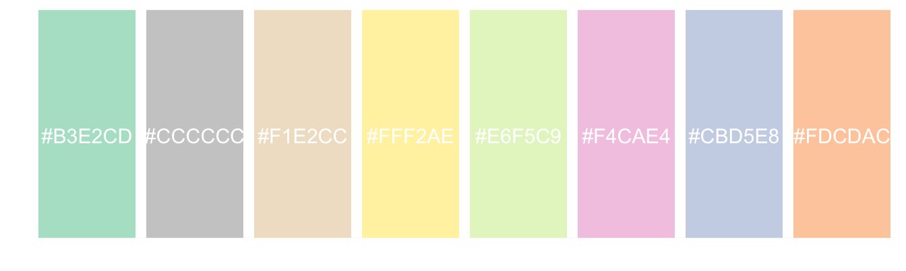
Here, an RColorBrewer palette is used with the Iris data.
ggplot(iris, aes(Sepal.Length, Sepal.Width)) +
geom_point(aes(color = Species)) +
scale_colour_manual(values=brewer.pal(6, "Dark2")) #only 3 required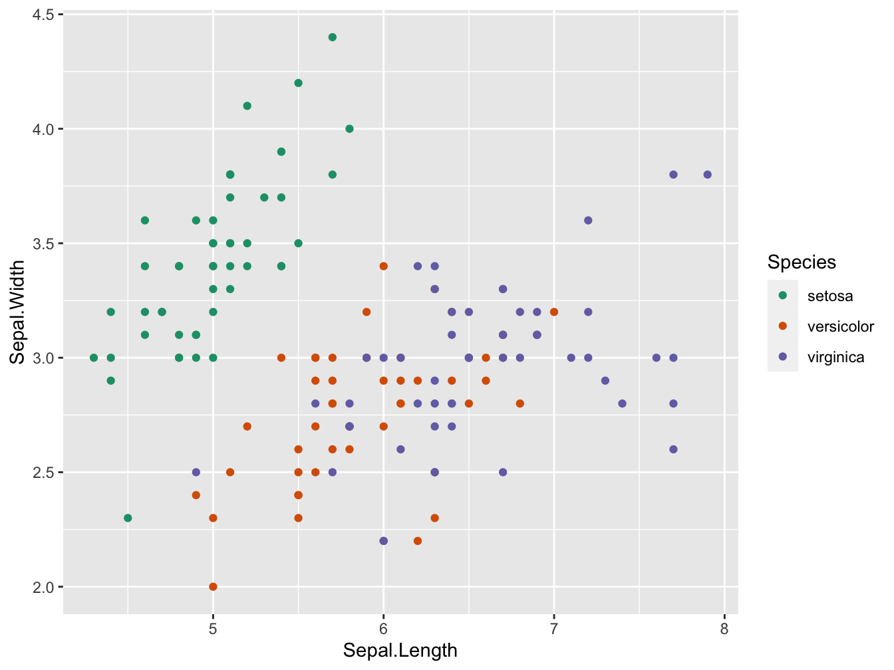
Shapes
These are the shapes available in ggplot2 (and base R as well).
shapes <- data.frame(
shape = c(0:19, 22, 21, 24, 23, 20),
x = 0:24 %/% 5,
y = -(0:24 %% 5)
)
ggplot(shapes, aes(x, y)) +
geom_point(aes(shape = shape), size = 5, fill = "red") +
geom_text(aes(label = shape), hjust = 0, nudge_x = 0.15) +
scale_shape_identity() +
expand_limits(x = 4.1) +
theme_void()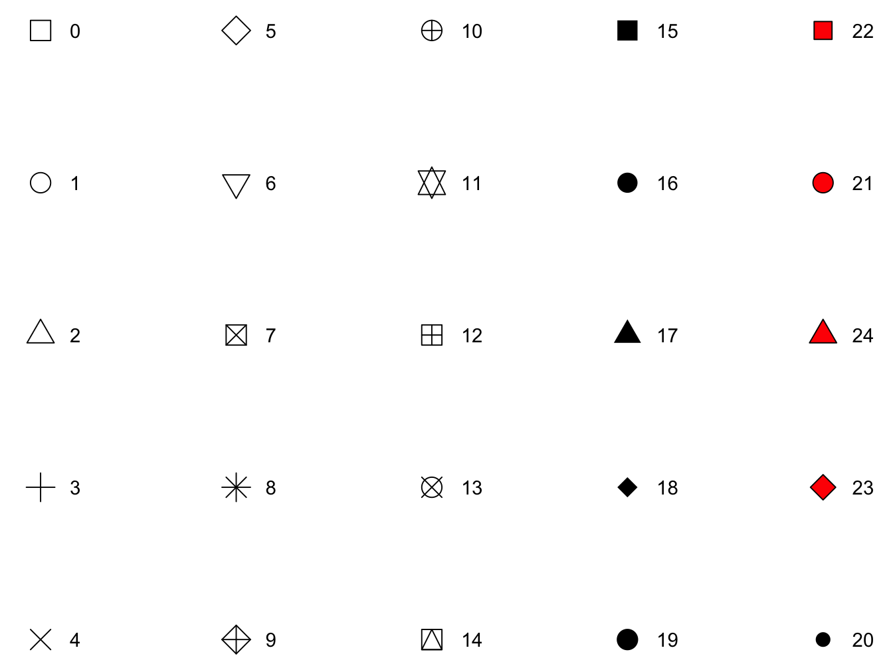
Warning: do not clutter your plot with too many dimensions/aesthetics!
Lines
Geoms that draw lines have a “linetype” parameter.
Legal values are the strings “blank”, “solid”, “dashed”, “dotted”, “dotdash”, “longdash”, and “twodash”. Alternatively, the numbers 0 to 6 can be used (0 for “blank”, 1 for “solid”, …).
You can set line type to a constant value. For this you use the linetype geom parameter. For instance, geom_line(data=d, mapping=aes(x=x, y=y), linetype=3) sets the line type of all lines in that layer to 3, which corresponds to a dotted line), but you can also use it dynamically.
Here is an example where the female and male deaths in the UK for 72 successive months are plotted.
ggplot(data = deaths, mapping = aes(x = month, y = deaths, linetype=sex)) +
geom_line()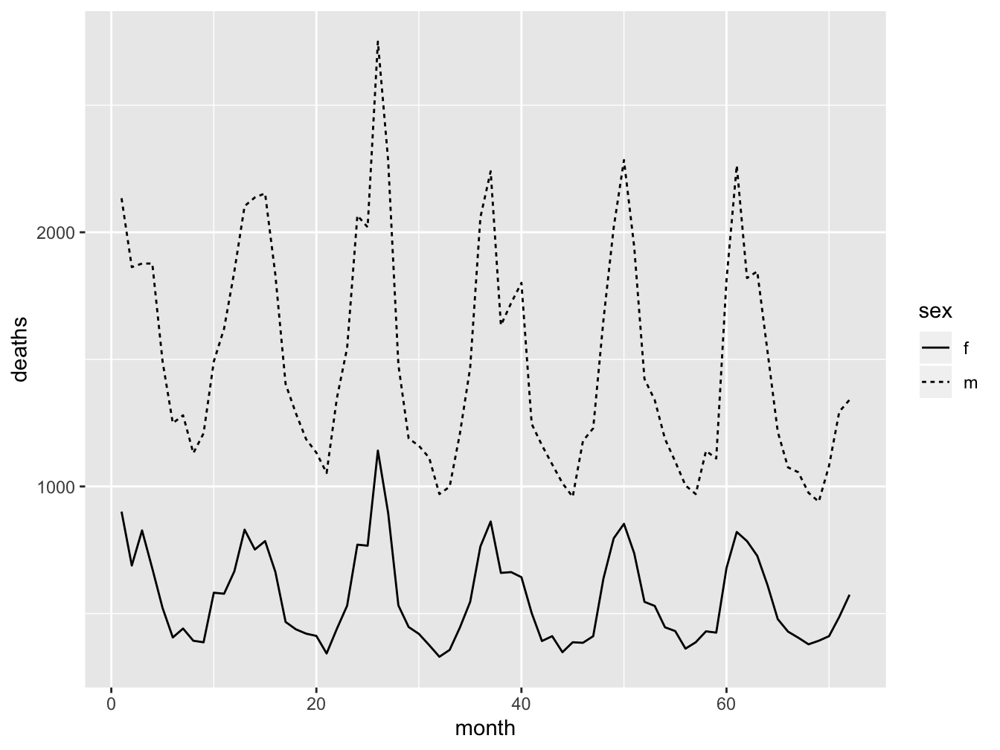
Size
The size of the plotting symbol can also be used as an extra “dimension” in your visualization. Here is an example showing the solar radiation of the airquality data as third dimension.
ggplot(data = na.omit(airquality),
mapping = aes(x = Wind, y = Ozone, size=Solar.R)) +
geom_point(color="red", alpha=0.5)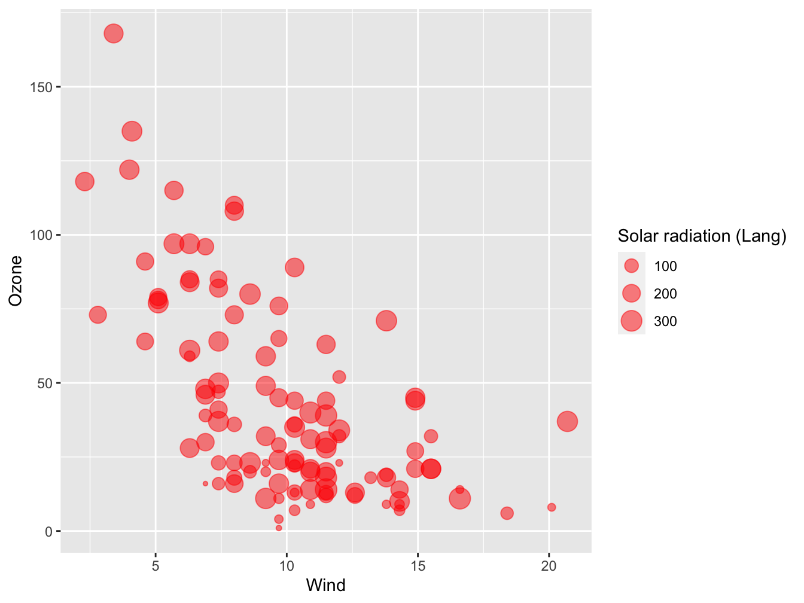
1.6 Geometries
What are geometries
Geometries are the ways data can be visually represented. Boxplot, scatterplot and histogram are a few examples. There are many geoms available in ggplot2; type geom_ in the console and you will get a listing. Even more are available outside the ggplot2 package. Here we’ll only explore a few.
Boxplot
Boxplot is one of the most-used data visualizations. It displays the 5-number summary containing from bottom to top: minimum, first quartile, median (= second quartile), third quartile, maximum. Outliers, usually defined as more than 1.5 * IQR from the median, are displayed as separate points. Some color was added in the example below.
dr_plot <- ggplot(dose_response_tidy, aes(x = dose, y = response))
dr_plot + geom_boxplot(fill='#E69F00')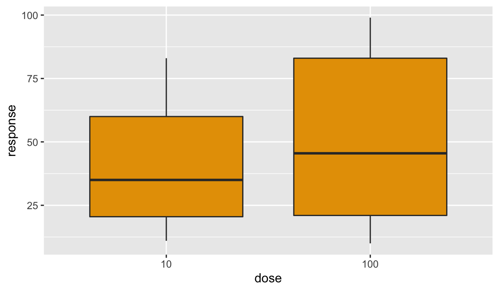
Jitter
Jitter is a good alternative to boxplot when you have small sample sizes, or discrete measurements with many exact copies, resulting in much overlap. Use the width and height attributes to adjust the jittering.
dr_plot + geom_jitter(width = 0.1, height = 0)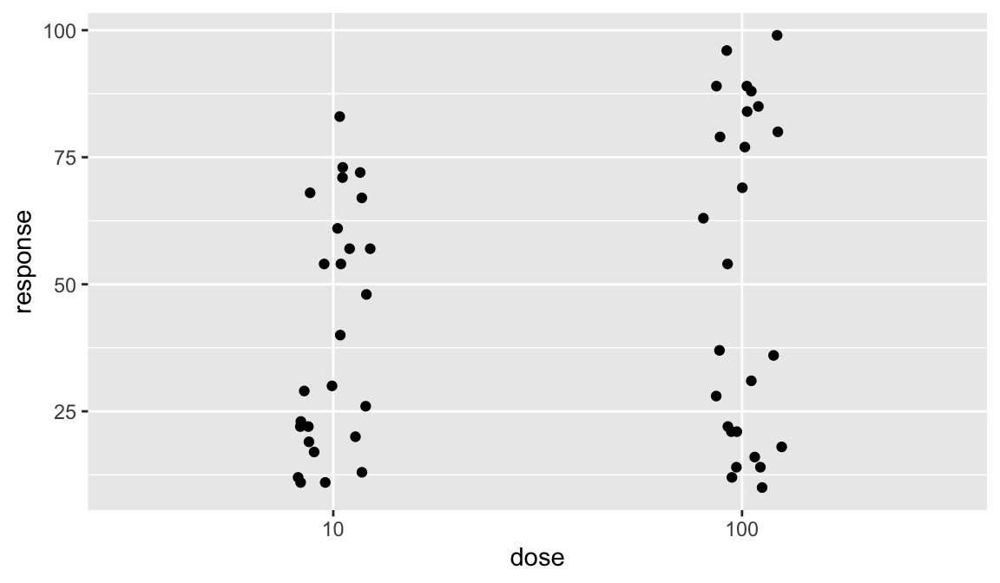
Here, a split over the sexes is added. Suddenly, a dramatic dosage effect becomes apparent that was smoothed out when the two sexes were combined.
dr_plot + geom_jitter(width = 0.1, height = 0, aes(colour = sex))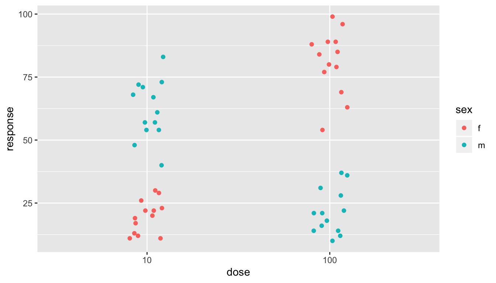
Alternatively, use a grid of plots
dr_plot +
geom_jitter(width = 0.1, height = 0, aes(colour = sex)) +
facet_wrap( . ~ sex)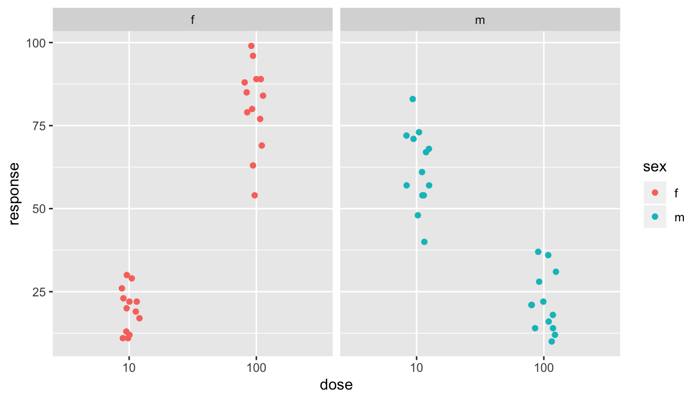
Plot overlays: boxplot + jitter
This example shows how you can overlay plots on top of each other as much as you like.
dr_plot <- ggplot(dose_response_tidy, aes(x = dose, y = response))
dr_plot +
geom_boxplot(fill='#E69F00') +
geom_jitter(width = 0.1, height = 0, size = 2, alpha = 0.6)
Scatterplot: Points
The geom_point() function is used to create the good old scatterplot of which we have seen several examples already.
Line plots
When points can be logically connected it may be a good idea to use a line to visualize trends, as we have seen in the deaths plot in section ??
Histograms
A histogram is a means to visualize a distribution.
Here we look at the eruption intervals of the “faithful” geyser. A binwidth argument is used to adjust the number of bins. Alternative use the bins argument.
ggplot(data=faithful, mapping = aes(x = waiting)) +
geom_histogram(binwidth = 3)
There are some statistics available to adjust what is shown on the y axis. The default that is used by geom_histogram is stat(count), so if you don’t specify anything this will be used. But if you want it scaled to a maximum of 1, use stat(count / max(count)). The stat() function is a flag to ggplot2 that you want to use calculated aesthetics produced by the statistic.You can use any transformation of the statistic, e.g. y = stat(log2(count)).
ggplot(data=faithful, mapping = aes(x = waiting)) +
geom_histogram(binwidth = 3, aes(y = stat(count / max(count)))) +
ylab(label = "normalized proportion")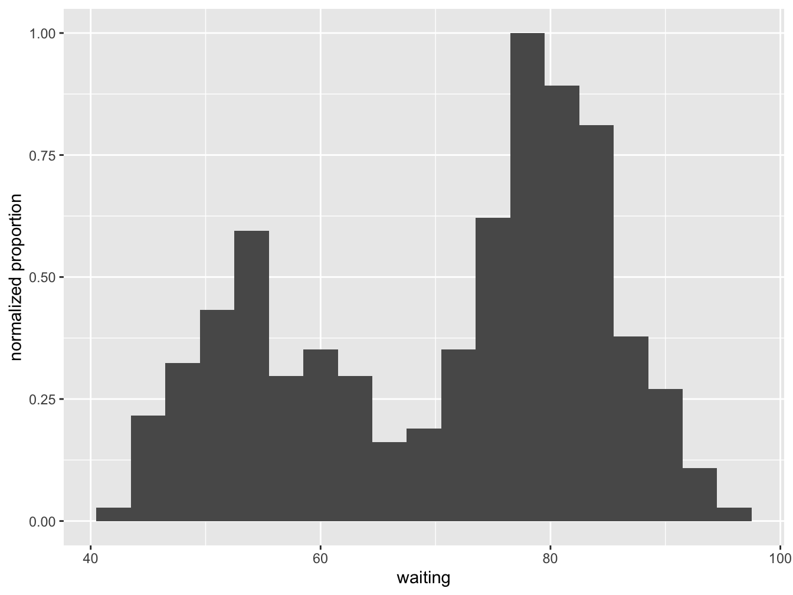
Alternatively, if you want percentages, you can use y = stat(count / sum(count) * 100).
ggplot(data=faithful, mapping = aes(x = waiting)) +
geom_histogram(binwidth = 3, mapping = aes(y = stat(count / sum(count) * 100))) +
ylab(label = "%")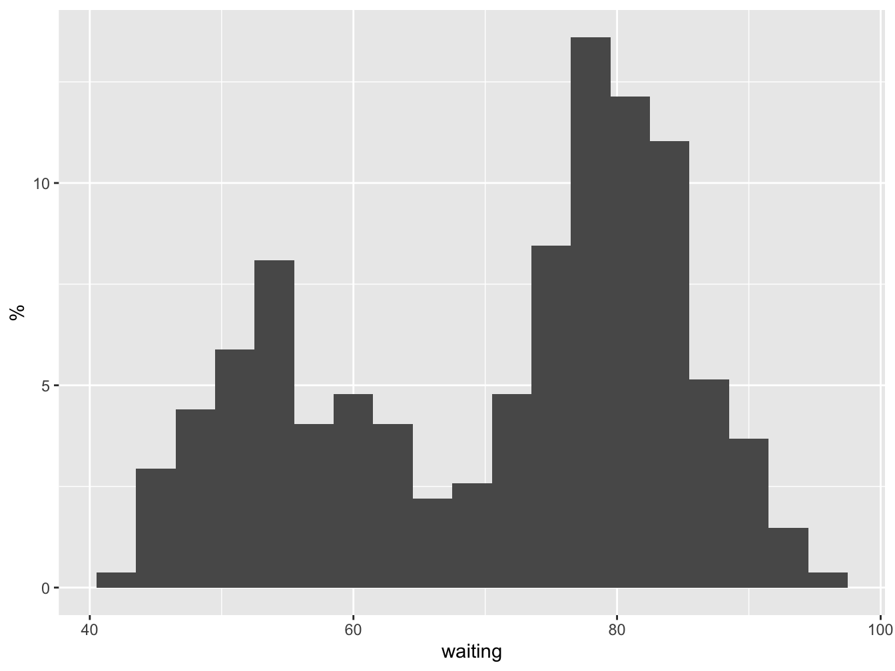
Violin plot
A violin plot is a compact display of a continuous distribution. It is a blend of geom_boxplot() and geom_density(): a violin plot is a mirrored density plot displayed in the same way as a boxplot. It is not seen as often as should be. An example best explains.
ggplot(data=airquality, mapping = aes(x = Month, y = Temp, fill=Month)) +
geom_violin() + theme(legend.position = "none")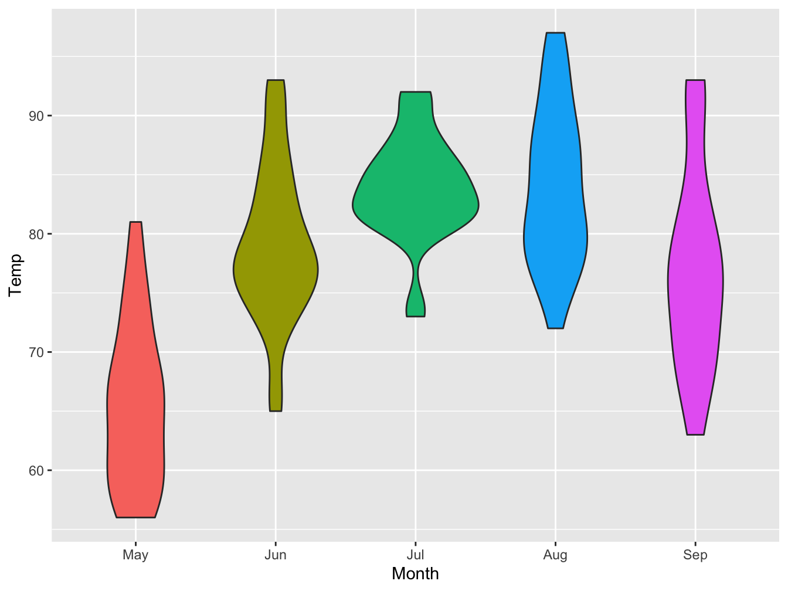
Barplot
The bar plot is similar to a histogram in appearance, but quite different in intent. Where a histogram visualizes the density of a continuous variable, a bar plot tries to visualize the counts or weights of distinct groups.
Here is a small example where the ten subjects of the sleep dataset have been charted (the x axis), and the extra column provided the height of the bar, split over the two groups. When no weight is provided, the occurrences of the different group levels will be counted and sued as weight.
ggplot(data = sleep,
mapping = aes(ID)) +
geom_bar(aes(weight = extra, fill = group))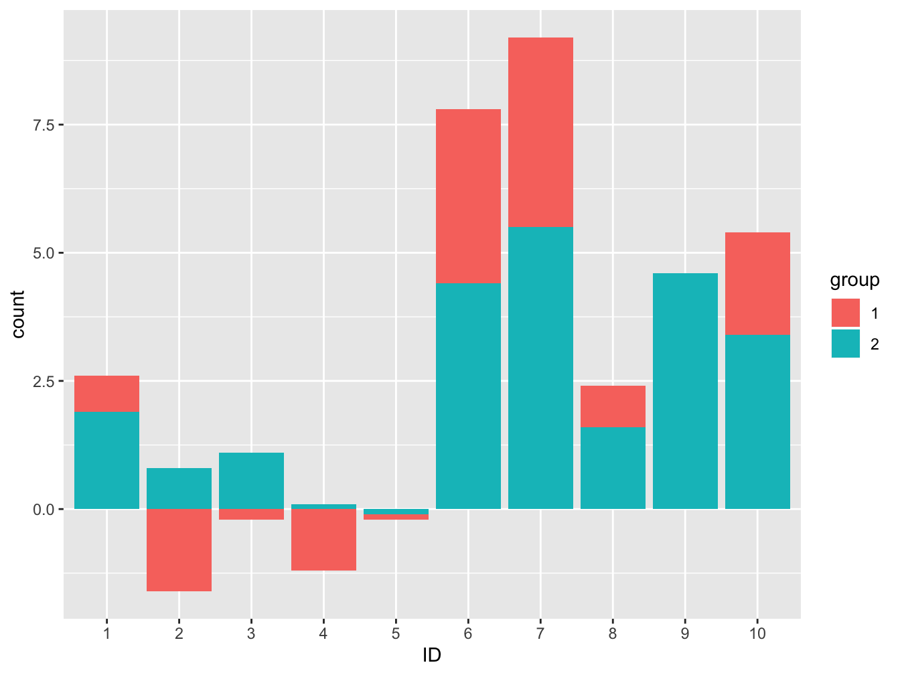
Overview of the main geoms
There are many geoms and even more outside the ggplot2 package. Here is a small overview of some of them.
| function. | description |
|---|---|
| geom_abline() | Add reference lines to a plot, either horizontal, vertical, or diagonal |
| geom_bar() | A bar plot makes the height of the bar proportional to the number of cases in each group |
| geom_density() | Computes and draws kernel density estimate, which is a smoothed version of the histogram |
| geom_line() | Connects the observations in order of the variable on the x axis |
| geom_path() | Connects the observations in the order in which they appear in the data |
| geom_qq() | geom_qq and stat_qq produce quantile-quantile plots |
| geom_smooth() | Aids the eye in seeing patterns in the presence of overplotting |
| geom_violin() | A violin plot is a compact display of a continuous distribution. It is a blend of geom_boxplot() and geom_density() |
If you want to know them all, simply type ?geom_ and select the one that looks like the thing you want.
1.7 Inheritance of aesthetics
Like the main ggplot() function, every geom_ function accepts its own mapping = aes(...). The mapping is inherited from the ggplot() function, but you can specify your own “local” aesthetic mapping. Aesthetics defined within a geom_ function are scoped to that function only.
In the plot below you see how this works (it is not a nice plot anymore, I know). Note that any aesthetic value specified outside the aes() function is simply a static property (in that scope).
ggplot(data = airquality, mapping = aes(x = Solar.R, y = Ozone)) +
geom_smooth(aes(linetype = Month), method="lm") +
geom_point(aes(color = Month), alpha = 0.7) 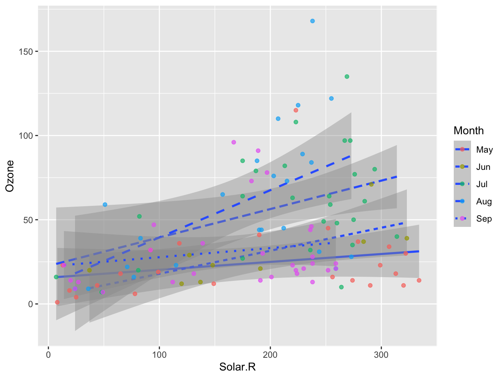
1.8 Faceting
Faceting is the process of splitting into multiple plots with exactly the same coordinate system where each plot show a subset of the data. It can be applied to any geom. The figure above could be improved slightly with this technique.
ggplot(data = airquality, mapping = aes(x = Solar.R, y = Ozone)) +
geom_smooth(aes(linetype = Month), method="lm") +
geom_point(aes(color = Month), alpha = 0.7) + facet_wrap(. ~ Month)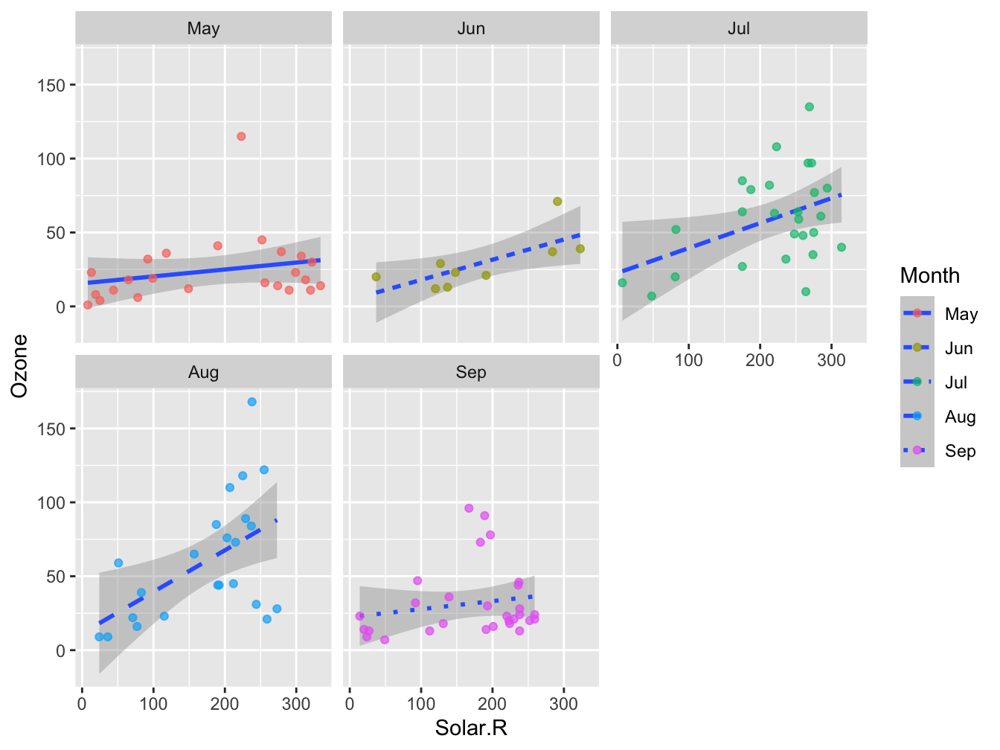
1.9 Experimenting with geoms and aesthetics
The process in plotting using ggplot2 is usually very iterative.
You start with the base plot, passing it the aesthetic for x and y, as shown above, and then experiment with geometries, colors and faceting.
Look at every result and ask yourself
- what story does is tell?
- is it the story you seek to tell?
Only after you finish this phase you should apply make-up (labels, texts). Maybe new questions have arisen as a result of the plot you created?
1.10 Final tweaks
This section describes aspects that fall outside the standard realm of plot construction.
Scales, Coordinates and Annotations
Scales and Coordinates are used to adjust the way your data is mapped and displayed. Here, a log10 scale is applied to the y axis using scale_y_log10() and the x axis is reversed (from high to low values instead of low to high) using scale_x_reverse().
ggplot(data = cars, mapping = aes(x = speed, y = dist)) +
geom_point() +
scale_y_log10() +
scale_x_reverse() 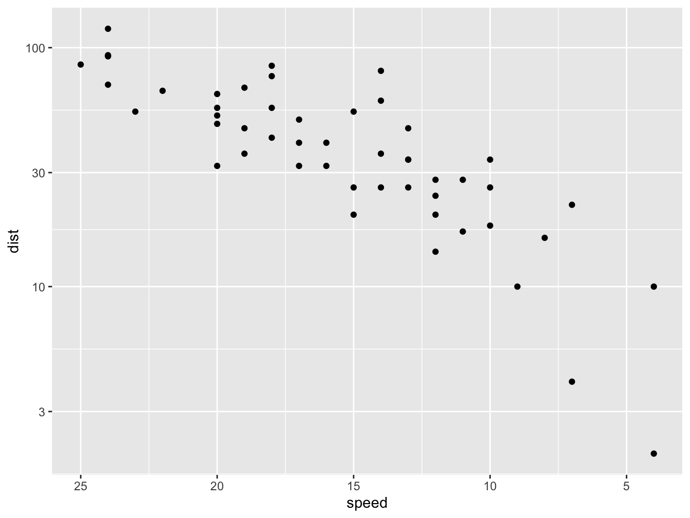
In other contexts, such as geographic information analysis, the scale is extremely important.
The default coordinate system in ggplot2 is coord_cartesian(). In the plot below, a different coordinate system is used.
# function to compute standard error of mean
se <- function(x) sqrt(var(x)/length(x))
DF <- data.frame(variable = as.factor(1:10), value = log2(2:11))
ggplot(DF, aes(variable, value, fill = variable)) +
geom_bar(width = 1, stat = "identity", color = "white") +
geom_errorbar(aes(ymin = value - se(DF$value),
ymax = value + se(DF$value),
color = variable),
width = .2) +
scale_y_continuous(breaks = 0:nlevels(DF$variable)) +
coord_polar() 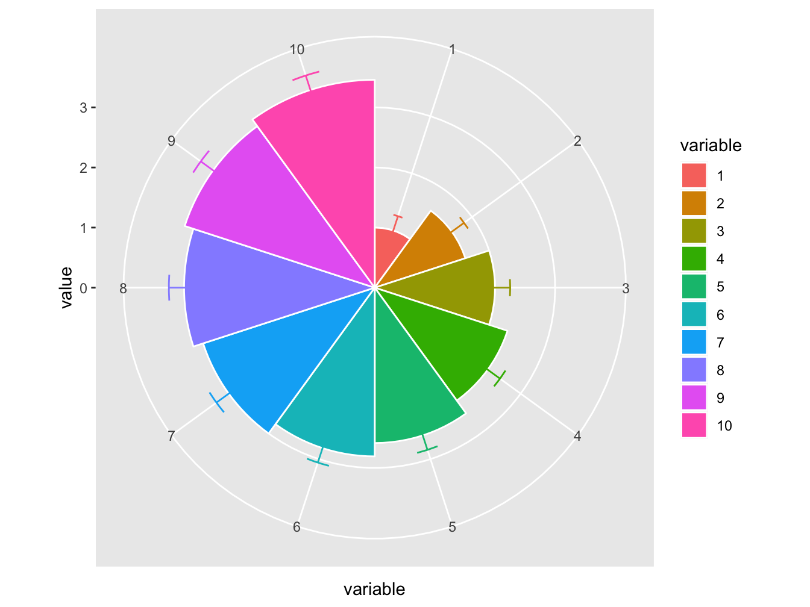
Labels
You have seen the xlab(), ylab(), and labs() functions at work already.
Themes
The theme is used to make changes to the overall appearance of the plot. Two approaches exist. The simplest one is selecting a specific theme and make some minor adjustments at most. Here are is the minimal theme where the text sizes have been modified somewhat.
ggplot(data = airquality, mapping=aes(x=Temp, y=Ozone)) +
geom_point(mapping=aes(color=Month)) +
geom_smooth(method="loess") +
xlab(expression("Temperature " (degree~F))) +
ylab("Ozone (ppb)") +
labs(color="Month") +
theme_minimal(base_size = 14)## Warning: Removed 37 rows containing non-finite values (stat_smooth).## Warning: Removed 37 rows containing missing values (geom_point).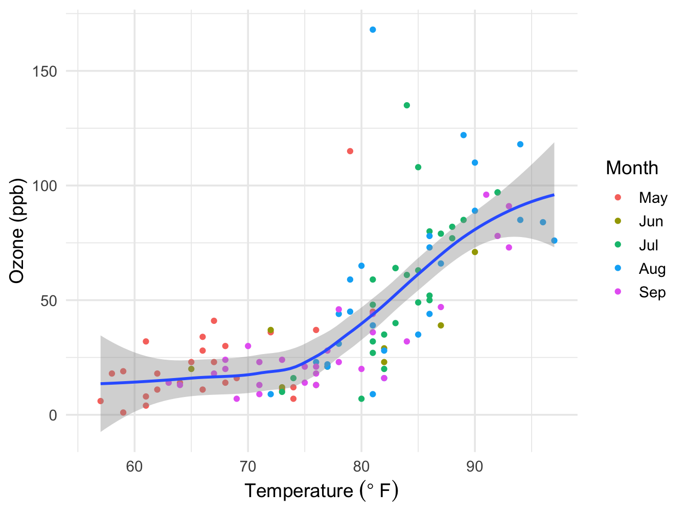
Note that if the color = Month aesthetic would have been put in the main ggplot call, the smoother would have been split over the Month groups.
Alternatively, the theme can be specified completely, as show below.
ggplot(data = airquality, mapping=aes(x=Temp, y=Ozone)) +
geom_point(mapping=aes(color=Month)) +
geom_smooth(method="loess") +
xlab("Temperature (F)") +
ylab("Ozone (ppb)") +
labs(color="Month") +
theme(axis.text.x = element_text(size = 12, colour = "blue", face = "bold"),
axis.text.y = element_text(size = 12, colour = "red", face = "bold"),
axis.title.x = element_text(size = 16, colour = "blue", face = "bold.italic"),
axis.title.y = element_text(size = 14, colour = "red", face = "bold.italic"),
axis.line = element_line(colour = "darkblue", size = 1, linetype = "solid"),
panel.background = element_rect(fill = "lightblue", size = 0.5, linetype = "solid"),
panel.grid.minor = element_blank())## Warning: Removed 37 rows containing non-finite values (stat_smooth).## Warning: Removed 37 rows containing missing values (geom_point).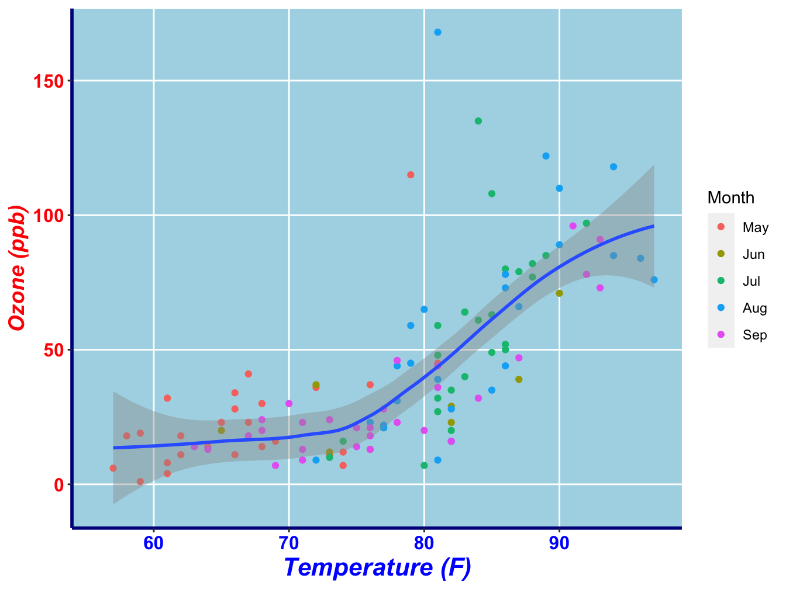
As you can see, there are element_text(), element_line() and element_rect() functions to specify these types of plot elements. The element_blank() function can be used in various theme aspects to prevent it from being displayed.
Annotation
A final layer that can be added one containing annotations. Annotations are elements that are added manually to the plot. This can be a text label, a fictitious data point, a shaded box or an arrow indicating a region of interest.
In the annotate() method, you specify the geom you wish to add (e.g. “text”, “point”)
The panel below demonstrates a few.
(outlier <- airquality[!is.na(airquality$Ozone) & airquality$Ozone > 150, ])## Ozone Solar.R Wind Temp Month Day TempFac
## 117 168 238 3.4 81 Aug 25 highggplot(data = na.omit(airquality), mapping=aes(x=Temp, y=Ozone)) +
annotate("rect", xmin=72, xmax=77, ymin=0, ymax=50,
alpha=0.1, color="blue", fill="blue") +
annotate("point", x = outlier$Temp, y = outlier$Ozone,
color = "darkred", size = 4, alpha = 0.3) +
geom_point(mapping=aes(color=Month)) +
geom_smooth(method="loess") +
xlab("Temperature (F)") +
ylab("Ozone (ppb)") +
annotate("text", x = outlier$Temp, y = outlier$Ozone -5, label = "Outlier") +
annotate("segment", x = outlier$Temp + 5, xend = outlier$Temp + 1,
y = outlier$Ozone + 4, yend = outlier$Ozone,
color = "darkred", size = 2, arrow = arrow()) 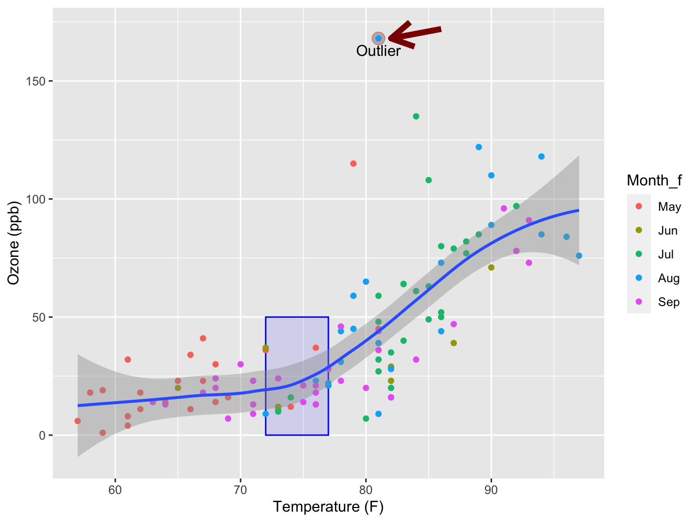
References
Wickham, Hadley. 2014. “Tidy Data.” The Journal of Statistical Software 59 (10). http://www.jstatsoft.org/v59/i10/.